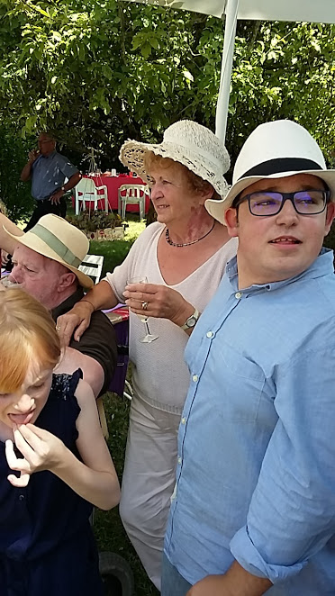

|
1. Cela fait cinquante ans déjà Aujourd’hui qu’on vous maria Chers amis, déjà cinquante ans! 2. Une vie longue, une vie dure Que la vôtre, la chose est sûre, L’amour fut le médicament 3. Contre la mort, la bête immonde Qui mène son char à la ronde. Vous lui tîntes tête ; au grand vent, 4. A la pluie, à la maladie ; Et votre « Jumelage » à vie Vous a fortifiés constamment. 5. Votre mariage fut béni: Une fille, un fils ont surgi Pour égayer tous vos instants. 6. Ta Geneviève, ta moitié Courageuse n’a pas cessé De veiller sur toi tout ce temps, 7. Bernard, et cette sainte femme, Se dévoua toujours, corps et âme, Aux soins de vos petits-enfants… 8. Faites la nique à la vieillesse ! En dépit de cette drôlesse, Pensons aux noces de diamant ! 8 juillet 2017